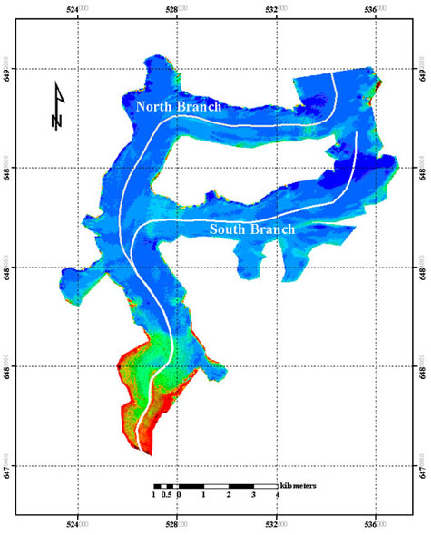
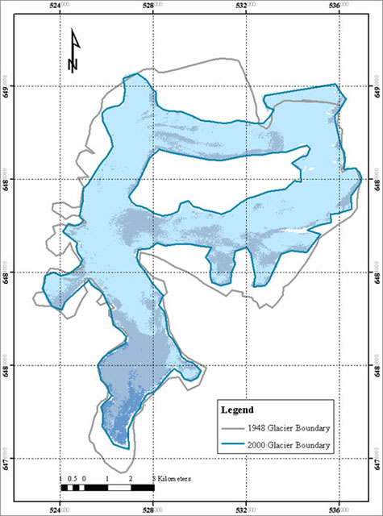

|
Extending |
|
- Make larger subset of Landsat image from 2000 covering entire glacier with both north and south streams (see figure below to identify the location of the north and south streams of the glacier).

Processed Landsat image showing the north and south streams of the Mendenhall glacier.
Image processed by Ellie Boyce
- Make larger subset of aerial photo from 2005 covering entire glacier with both north and south stream
- Outline glacier boundary for the 2000 and 2005 images by onscreen digitization
- Generate total area change map (see an example of a total area change map generated using and old topomap from 1948 and Landsat image of 2000)

Map showing total Mendenhall glacier area in 1948 and 2000.
Image processed by Ellie Boyce
|
Adapting |
|
Idea for a term project for a semester long remote sensing/GIS course: Ask students to go through this case study and then carry out a literature review to identify another glacier that is retreating. Search, download, and process related map and image data for this glacier and quantify the glacial retreat and surface area change over time for this glacier. Present your results in a written report including all maps generated in the process.